CALL: Chapter4
Some of the commands are edited for fast computation. Each set of commands is followed by a 'pause' command.
This routine also can print the figures; For printing the figures on directory ../bilder/ edit the file and put printing=1;
% Tested on Matlab 5.3 % History % Revised pab sept2005 % Added sections -> easier to evaluate using cellmode evaluation. % revised pab Feb2004 % updated call to lc2sdat % Created by GL July 13, 2000 % from commands used in Chapter 4 %
pstate = 'off'; printing=0; %set(0,'DefaultAxesFontSize',15')
load sea.dat; xx_sea=sea; tp_sea = dat2tp(xx_sea); lc_sea = tp2lc(tp_sea); T_sea = xx_sea(end,1)-xx_sea(1,1); lc_sea(:,2) = lc_sea(:,2)/T_sea; clf subplot(221), plot(lc_sea(:,1),lc_sea(:,2)) title('Crossing intensity, (u, \mu(u))') subplot(222), semilogx(lc_sea(:,2),lc_sea(:,1)) title('Crossing intensity, (log \mu(u), u)') if (printing==1), print -deps ../bilder/fatigue_3.eps end wafostamp([],'(ER)') pause(pstate) m_sea = mean(xx_sea(:,2)); f0_sea = interp1(lc_sea(:,1),lc_sea(:,2),m_sea,'linear') extr_sea = length(tp_sea)/(2*T_sea); alfa_sea = f0_sea/extr_sea pause(pstate)
f0_sea =
0.2263
alfa_sea =
0.4961
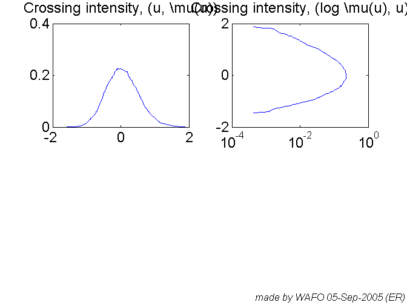 RFC_sea=tp2rfc(tp_sea); mM_sea=tp2mm(tp_sea); clf subplot(122), ccplot(mM_sea); title('min-max cycle count') subplot(121), ccplot(RFC_sea); title('Rainflow cycle count') if (printing==1), print -deps ../bilder/fatigue_4.eps end wafostamp([],'(ER)') pause(pstate)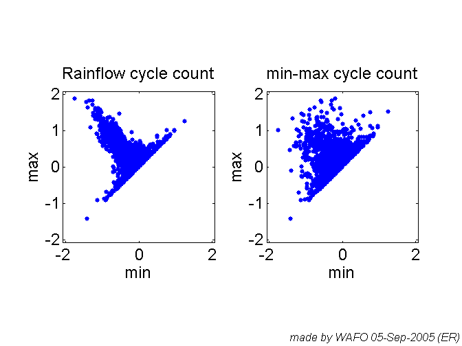
ampmM_sea=cc2amp(mM_sea); ampRFC_sea=cc2amp(RFC_sea); clf subplot(221), hist(ampmM_sea,25); title('min-max amplitude distribution') subplot(222), hist(ampRFC_sea,25); title('Rainflow amplitude distribution') if (printing==1), print -deps ../bilder/fatigue_5.eps end wafostamp([],'(ER)') pause(pstate)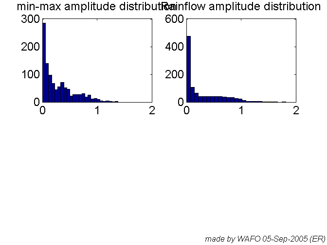
n=41; param_m=[-1 1 n]; param_D=[1 n n];
u_markov=levels(param_m);
G_markov=mktestmat(param_m,[-0.2 0.2],0.15,1);
T_markov=5000;
xxD_markov=mctpsim({G_markov []},T_markov);
xx_markov=[(1:T_markov)' u_markov(xxD_markov)'];
clf
plot(xx_markov(1:50,1),xx_markov(1:50,2))
title('Markov chain of turning points')
if (printing==1), print -deps ../bilder/fatigue_6.eps
end
wafostamp([],'(ER)')
pause(pstate)
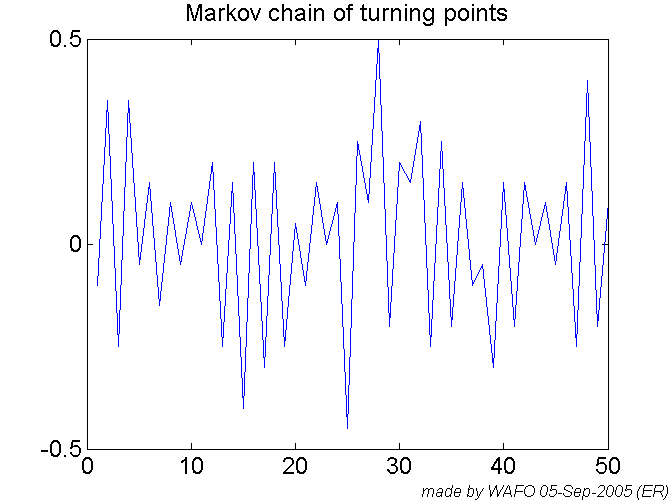 me = mean(xx_sea(:,2)); sa = std(xx_sea(:,2)); Hm0_sea = 4*sa; Tp_sea = 1/max(lc_sea(:,2)); spec = jonswap([],[Hm0_sea Tp_sea]); [sk, ku] = spec2skew(spec); spec.tr = hermitetr([],[sa sk ku me]); param_h = [-1.5 2 51]; spec_norm = spec; spec_norm.S = spec_norm.S/sa^2; xx_herm = spec2sdat(spec_norm,[2^15 1],0.1); % ????? PJ, JR 11-Apr-2001 % NOTE, in the simulation program spec2sdat %the spectrum must be normalized to variance 1 % ????? h = 0.2; [dtp,u_herm,xx_herm_1]=dat2dtp(param_h,xx_herm,h); clf plot(xx_herm(:,1),xx_herm(:,2),'k','LineWidth',2); hold on; plot(xx_herm_1(:,1),xx_herm_1(:,2),'k--','Linewidth',2); axis([0 50 -1 1]), hold off; title('Rainflow filtered wave data') if (printing==1), print -deps ../bilder/fatigue_7.eps end wafostamp([],'(ER)') pause(pstate)
Warning: Hm0,Tp is outside the JONSWAP range The validity of the spectral density is questionable Transforming data.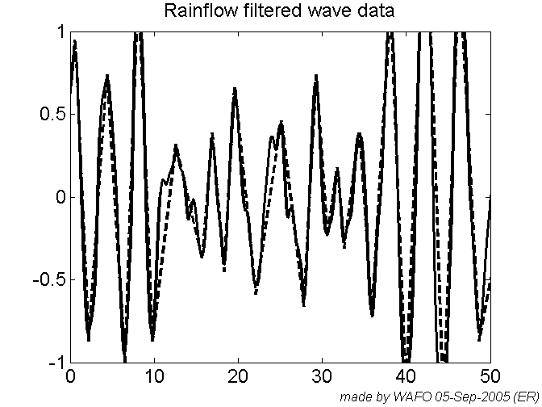
tp_herm=dat2tp(xx_herm); RFC_herm=tp2rfc(tp_herm); mM_herm=tp2mm(tp_herm); h=0.2; [dtp,u,tp_herm_1]=dat2dtp(param_h,xx_herm,h); RFC_herm_1 = tp2rfc(tp_herm_1); clf subplot(121), ccplot(RFC_herm) title('h=0') subplot(122), ccplot(RFC_herm_1) title('h=0.2') if (printing==1), print -deps ../bilder/fatigue_8.eps end wafostamp([],'(ER)') pause(pstate)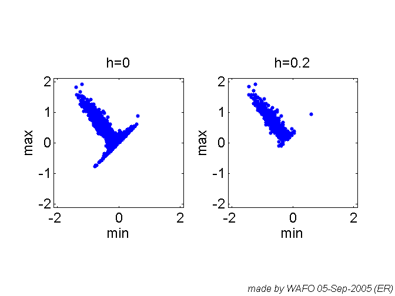
Grfc_markov=mctp2rfm({G_markov []});
clf
subplot(121), cmatplot(u_markov,u_markov,G_markov), axis('square')
subplot(122), cmatplot(u_markov,u_markov,Grfc_markov), axis('square')
wafostamp([],'(ER)')
pause(pstate)
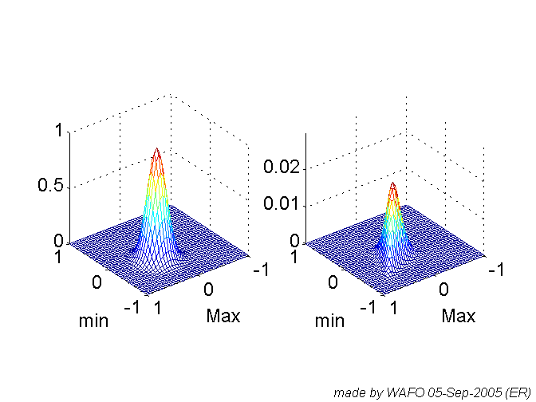 clf
cmatplot(u_markov,u_markov,{G_markov Grfc_markov},3)
wafostamp([],'(ER)')
pause(pstate)
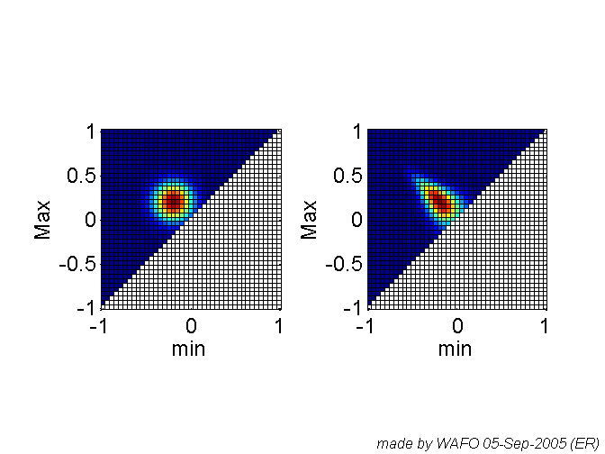 cmatplot(u_markov,u_markov,{G_markov Grfc_markov},4)
subplot(121), axis('square'), title('min2max transition matrix')
subplot(122), axis('square'), title('Rainflow matrix')
if (printing==1), print -deps ../bilder/fatigue_9.eps
end
wafostamp([],'(ER)')
pause(pstate)
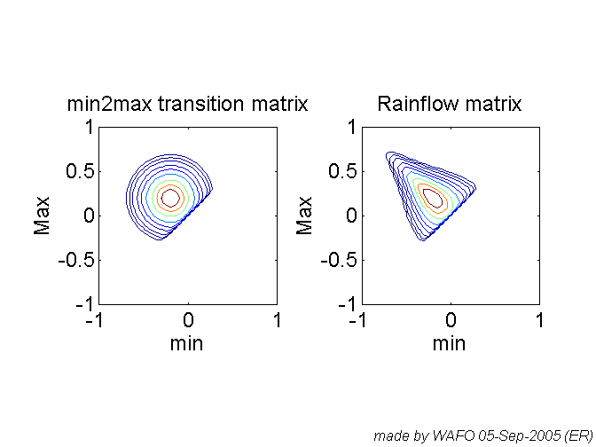 n=length(u_markov);
Frfc_markov=dtp2rfm(xxD_markov,n);
clf
cmatplot(u_markov,u_markov,{Frfc_markov Grfc_markov*T_markov/2},3)
subplot(121), axis('square'), title('Observed rainflow matrix')
subplot(122), axis('square'), title('Theoretical rainflow matrix')
if (printing==1), print -deps ../bilder/fatigue_10.eps
end
wafostamp([],'(ER)')
pause(pstate)
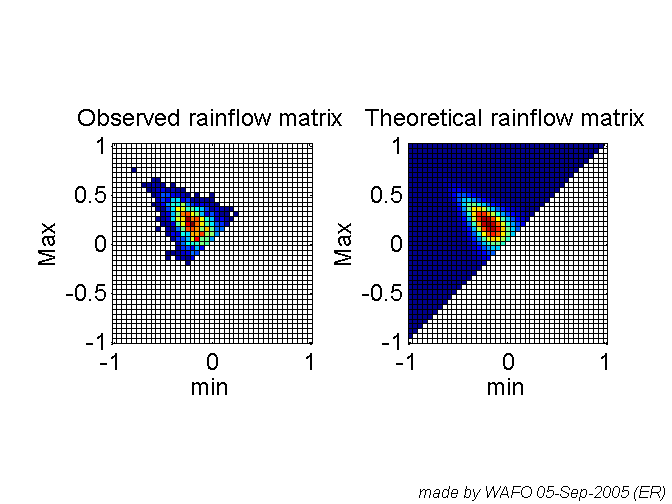 tp_markov=dat2tp(xx_markov);
RFC_markov=tp2rfc(tp_markov);
h=1;
Frfc_markov_smooth=cc2cmat(param_m,RFC_markov,[],1,h);
clf
cmatplot(u_markov,u_markov,{Frfc_markov_smooth Grfc_markov*T_markov/2},4)
subplot(121), axis('square'), title('Smoothed observed rainflow matrix')
subplot(122), axis('square'), title('Theoretical rainflow matrix')
if (printing==1), print -deps ../bilder/fatigue_11.eps
end
wafostamp([],'(ER)')
pause(pstate)
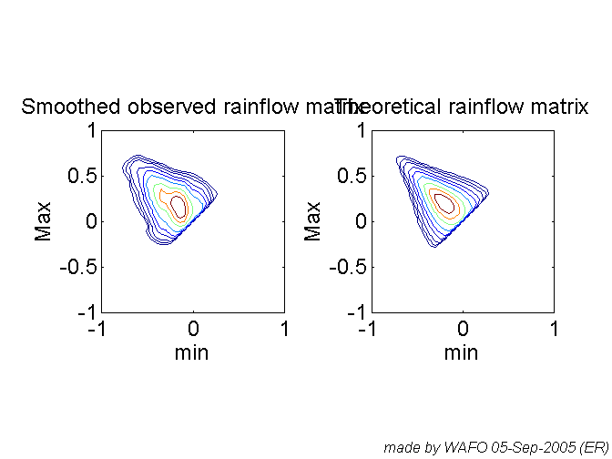 clf %GmM3_herm=spec2mmtpdf(spec,[],'Mm',[],[],2); GmM3_herm=spec2cmat(spec,[],'Mm',[],param_h,2); pdfplot(GmM3_herm) wafostamp([],'(ER)') pause(pstate)
The level u for Gaussian process = 3.0635e-006 Writing data. Starting Fortran executable. Laps to go: 40 Laps to go: 39 Laps to go: 38 Laps to go: 37 Laps to go: 36 Laps to go: 35 Laps to go: 34 Laps to go: 33 Laps to go: 32 Laps to go: 31 Laps to go: 30 Laps to go: 29 Laps to go: 28 Laps to go: 27 Laps to go: 26 Laps to go: 25 Laps to go: 24 Laps to go: 23 Laps to go: 22 Laps to go: 21 Laps to go: 20 Laps to go: 19 Laps to go: 18 Laps to go: 17 Laps to go: 16 Laps to go: 15 Laps to go: 14 Laps to go: 13 Laps to go: 12 Laps to go: 11 Laps to go: 10 Laps to go: 9 Laps to go: 8 Laps to go: 7 Laps to go: 6 Laps to go: 5 Laps to go: 4 Laps to go: 3 Laps to go: 2 Laps to go: 1 Loading data.

Grfc_herm=mctp2rfm({GmM3_herm.f []});
u_herm=levels(param_h);
clf
cmatplot(u_herm,u_herm,{GmM3_herm.f Grfc_herm},4)
subplot(121), axis('square'), title('min-max matrix')
subplot(122), axis('square'), title('Theoretical rainflow matrix')
if (printing==1), print -deps ../bilder/fatigue_12.eps
end
wafostamp([],'(ER)')
pause(pstate)
Warning: Warning: Rowsums of P not equal to 1. Renormalizing! Warning: Warning: Rowsum 49 of P equals zero. Deleting state 49! Warning: Warning: Rowsum 50 of P equals zero. Deleting state 50! Warning: Warning: Rowsums of P not equal to 1. Renormalizing! Warning: Negative elements in calculated rainflow matrix F_rfc. Setting to zero!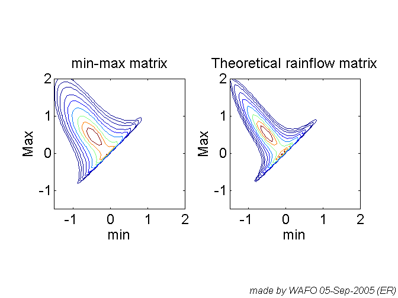
clf Grfc_direct_herm=spec2cmat(spec,[],'rfc',[],[],2); subplot(121), pdfplot(GmM3_herm), axis('square'), hold on subplot(122), pdfplot(Grfc_direct_herm), axis('square'), hold off if (printing==1), print -deps ../bilder/fig_mmrfcjfr.eps end wafostamp([],'(ER)') pause(pstate)
The level u for Gaussian process = 3.0635e-006 Writing data. Starting Fortran executable. Laps to go: 40 Laps to go: 39 Laps to go: 38 Laps to go: 37 Laps to go: 36 Laps to go: 35 Laps to go: 34 Laps to go: 33 Laps to go: 32 Laps to go: 31 Laps to go: 30 Laps to go: 29 Laps to go: 28 Laps to go: 27 Laps to go: 26 Laps to go: 25 Laps to go: 24 Laps to go: 23 Laps to go: 22 Laps to go: 21 Laps to go: 20 Laps to go: 19 Laps to go: 18 Laps to go: 17 Laps to go: 16 Laps to go: 15 Laps to go: 14 Laps to go: 13 Laps to go: 12 Laps to go: 11 Laps to go: 10 Laps to go: 9 Laps to go: 8 Laps to go: 7 Laps to go: 6 Laps to go: 5 Laps to go: 4 Laps to go: 3 Laps to go: 2 Laps to go: 1 Loading data. Warning: this is not a pdf since cdf>1 normalizing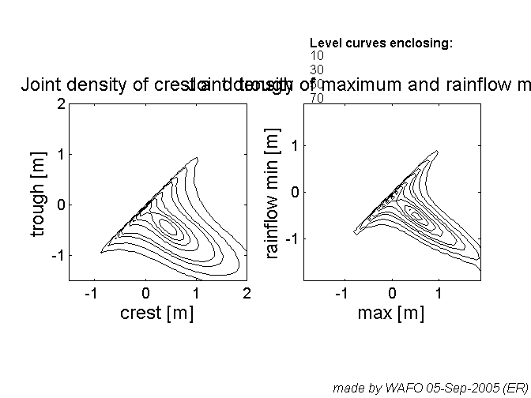
tp_herm=dat2tp(xx_herm);
RFC_herm=tp2rfc(tp_herm);
mM_herm=tp2mm(tp_herm);
h=0.2;
FmM_herm_smooth=cc2cmat(param_h,mM_herm,[],1,h);
Frfc_herm_smooth=cc2cmat(param_h,RFC_herm,[],1,h);
T_herm=xx_herm(end,1)-xx_herm(1,1);
clf
cmatplot(u_herm,u_herm,{FmM_herm_smooth GmM3_herm.f*length(mM_herm) ; ...
Frfc_herm_smooth Grfc_herm*length(RFC_herm)},4)
subplot(221), axis('square'), title('Observed smoothed min-max matrix')
subplot(222), axis('square'), title('Theoretical min-max matrix')
subplot(223), axis('square'), title('Observed smoothed rainflow matrix')
subplot(224), axis('square'), title('Theoretical rainflow matrix')
if (printing==1), print -deps ../bilder/fatigue_13.eps
end
wafostamp([],'(ER)')
pause(pstate)
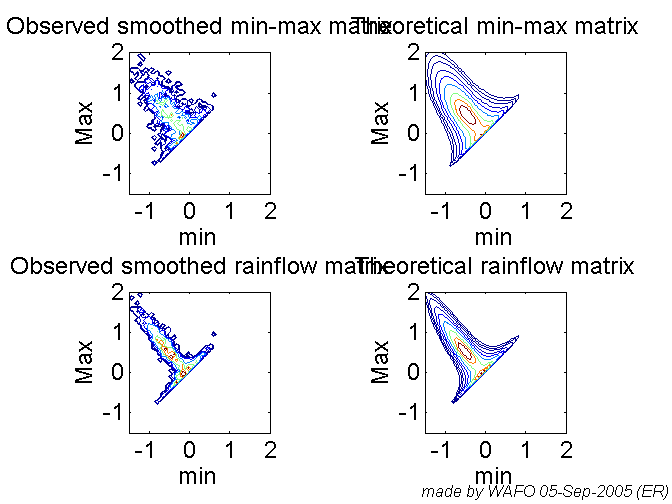 clf cross_herm=dat2lc(xx_herm); alpha1=0.25; alpha2=0.75; xx_herm_sim1=lc2sdat(cross_herm,500,alpha1); cross_herm_sim1=dat2lc(xx_herm_sim1); subplot(211) plot(cross_herm(:,1),cross_herm(:,2)/max(cross_herm(:,2))) hold on stairs(cross_herm_sim1(:,1),... cross_herm_sim1(:,2)/max(cross_herm_sim1(:,2))) hold off title('Crossing intensity, \alpha = 0.25') subplot(212) plot(xx_herm_sim1(:,1),xx_herm_sim1(:,2)) title('Simulated load, \alpha = 0.25') if (printing==1), print -deps ../bilder/fatigue_14_25.eps end wafostamp([],'(ER)')
ans =
0.8935
ans =
46
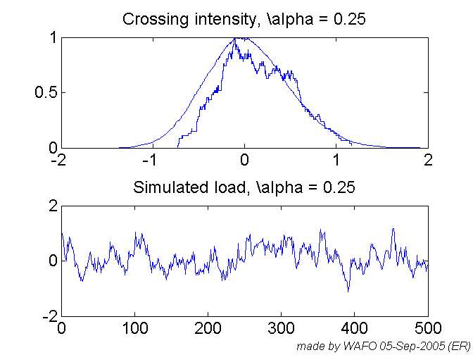 xx_herm_sim2=lc2sdat(cross_herm,500,alpha2); cross_herm_sim2=dat2lc(xx_herm_sim2); subplot(211) plot(cross_herm(:,1),cross_herm(:,2)/max(cross_herm(:,2))) hold on stairs(cross_herm_sim2(:,1),... cross_herm_sim2(:,2)/max(cross_herm_sim2(:,2))) hold off title('Crossing intensity, \alpha = 0.75') subplot(212) plot(xx_herm_sim2(:,1),xx_herm_sim2(:,2)) title('Simulated load, \alpha = 0.75') if (printing==1), print -deps ../bilder/fatigue_14_75.eps end wafostamp([],'(ER)') pause(pstate)
ans =
0.8935
ans =
128
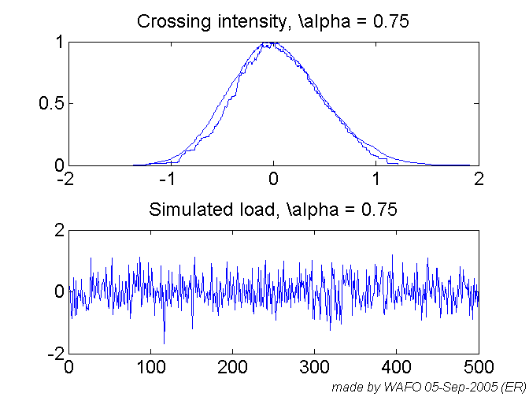 beta=3.2; gam=5.5E-10; T_sea=xx_sea(end,1)-xx_sea(1,1);
d_beta=cc2dam(RFC_sea,beta)/T_sea;
time_fail=1/gam/d_beta/3600 %in hours of the specific storm
pause(pstate)
time_fail = 5.9693e+006
clf mu_markov=cmat2lc(param_m,Grfc_markov); muObs_markov=cmat2lc(param_m,Frfc_markov/(T_markov/2)); clf plot(mu_markov(:,1),mu_markov(:,2),muObs_markov(:,1),muObs_markov(:,2),'--') title('Theoretical and observed crossing intensity ') if (printing==1), print -deps ../bilder/fatigue_15.eps end wafostamp([],'(ER)') pause(pstate)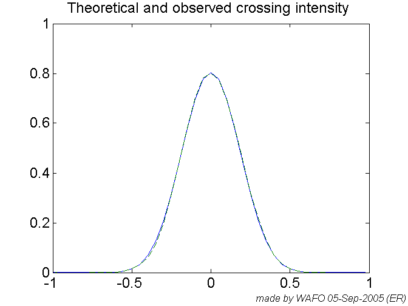
beta = 4; Dam_markov = cmat2dam(param_m,Grfc_markov,beta) DamObs1_markov = cc2dam(RFC_markov,beta)/(T_markov/2) DamObs2_markov = cmat2dam(param_m,Frfc_markov,beta)/(T_markov/2) pause(pstate) Dmat_markov = cmat2dmat(param_m,Grfc_markov,beta); DmatObs_markov = cmat2dmat(param_m,Frfc_markov,beta)/(T_markov/2); clf subplot(121), cmatplot(u_markov,u_markov,Dmat_markov,4) title('Theoretical damage matrix') subplot(122), cmatplot(u_markov,u_markov,DmatObs_markov,4) title('Observed damage matrix') if (printing==1), print -deps ../bilder/fatigue_16.eps end wafostamp([],'(ER)') pause(pstate)
Dam_markov =
0.0073
DamObs1_markov =
0.0073
DamObs2_markov =
0.0073
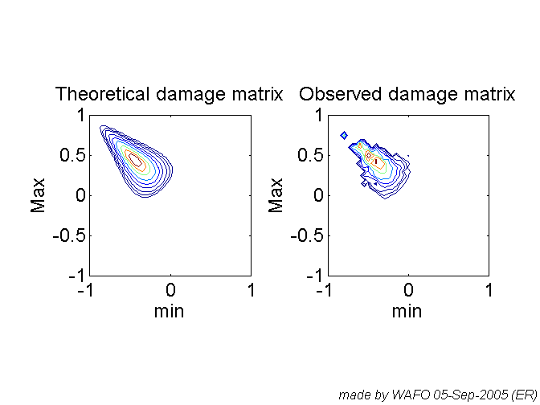 %Damplus_markov = lc2dplus(mu_markov,beta)
pause(pstate)
SN = load('sn.dat'); s = SN(:,1); N = SN(:,2); clf loglog(N,s,'o'), axis([0 14e5 10 30]) %if (printing==1), print -deps ../bilder/fatigue_?.eps end wafostamp([],'(ER)') pause(pstate)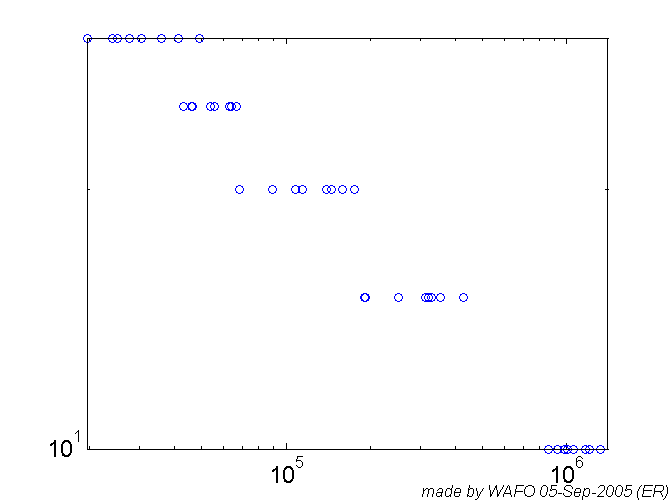
wnormplot(reshape(log(N),8,5)) if (printing==1), print -deps ../bilder/fatigue_17.eps end wafostamp([],'(ER)') pause(pstate)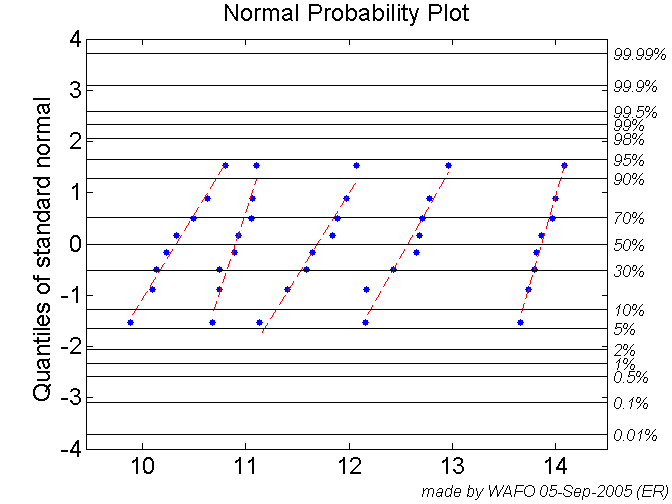
[e0,beta0,s20] = snplot(s,N,12) title('S-N-data with estimated N(s)','FontSize',20) set(gca,'FontSize',20) if (printing==1), print -deps ../bilder/fatigue_18a.eps end wafostamp([],'(ER)') pause(pstate)
e0 =
5.5361e-010
beta0 =
3.2286
s20 =
0.0604
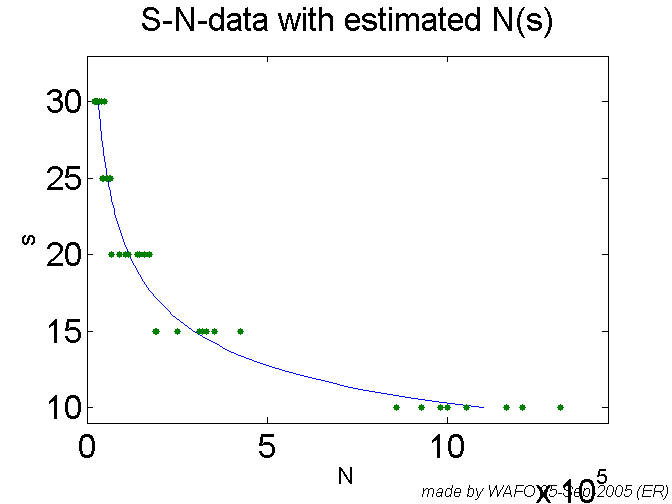 [e0,beta0,s20] = snplot(s,N,14) title('S-N-data with estimated N(s)','FontSize',20) set(gca,'FontSize',20) if (printing==1), print -deps ../bilder/fatigue_18b.eps end wafostamp([],'(ER)') pause(pstate)
e0 =
5.5361e-010
beta0 =
3.2286
s20 =
0.0604

beta = 3:0.1:8; DRFC = cc2dam(RFC_sea,beta); dRFC = DRFC/T_sea; plot(beta,dRFC), axis([3 8 0 0.25]) title('Damage intensity as function of \beta') if (printing==1), print -deps ../bilder/fatigue_19.eps end wafostamp([],'(ER)') pause(pstate)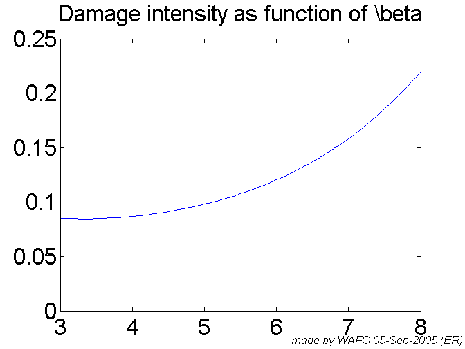
dam0 = cc2dam(RFC_sea,beta0)/T_sea; [t0,F0] = ftf(e0,dam0,s20,0.5,1); [t1,F1] = ftf(e0,dam0,s20,0,1); [t2,F2] = ftf(e0,dam0,s20,5,1); plot(t0,F0,t1,F1,t2,F2) title('Fatigue life distribution function') if (printing==1), print -deps ../bilder/fatigue_20.eps end wafostamp([],'(ER)') save Chap4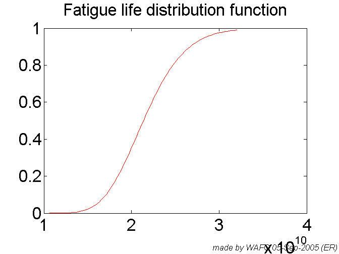